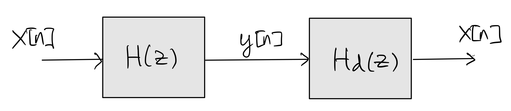

6.4. Minimum-phase Filter#
A minimum-phase filter is a causal, rational filter with transfer function \(H_{\min}(z)\) whose poles and zeros are strictly inside the unit circle.
It is clear that a minimum-phase filter \(H_{\min}(z)\) and its inverse \(\frac{1}{H_{\min}(z)}\) are both stable.
6.4.1. Minimum-phase decomposition#
Let
\[\begin{equation*} H(z) = b_0 \cdot \frac{\prod_{k=1}^M (1-z_k z^{-1})}{\prod_{k=1}^N (1 - p_k z^{-1})} \end{equation*}\]be the transfer function of a causal, stable (i.e., \(|p_k| < 1\) for all \(k\)), rational filter with no zeros on the unit circle (i.e., \(|z_k| \neq 1\) for all \(k\)). Without loss of generality, let \(1 \leq M_0 \leq M\) be such that \(|z_k| < 1\) for \(k=1,2,\ldots, M_0\) and \(|z_k| > 1\) for \(k=M_0+1, M_0+2, \ldots, M\). Then
(6.6)#\[\begin{split}\begin{align} H(z) &= \underbrace{b_0 \frac{\prod_{k=1}^{M_0} (1-z_k z^{-1})}{\prod_{k=1}^N (1 - p_k z^{-1})} \cdot \prod_{k=M_0+1}^{M} (1-z_k z^{-1})}_{\text{Minimum-phase}} \cdot \underbrace{\frac{\prod_{k=M_0+1}^{M} -z_k \left(-\frac{1}{z_k} - z^{-1} \right)}{\prod_{k=M_0+1}^M \left(1 - \frac{1}{z_k^*} z^{-1}\right)}}_{\text{Allpass}} \\ &= H_{\min} (z) \cdot H_{\text{ap}}(z). \end{align}\end{split}\]That is, any such filter can be decomposed into a cascade of a minimum-phase filter and an allpass filter.
Intuitively, the decomposition in (6.6) reflects all zeros of \(H(z)\) that are outside of the unit circle to inside in order to obtain a minimum-phase filter \(H_{\min}(z)\).
This decomposition implies the following properties:
\(|H(e^{j\hat\omega})| = |H_{\min}(e^{j\hat\omega})|\)
\(\angle H(e^{j\hat\omega}) = \angle H_{\min}(e^{j\hat\omega}) + \angle H_{\text{ap}}(e^{j\hat\omega})\)
\(\displaystyle \tau_g(e^{j\hat\omega}) = -\frac{d \angle H(e^{j\hat\omega})}{d\hat\omega} = -\frac{d \angle H_{\min}(e^{j\hat\omega})}{d\hat\omega} - \frac{d \angle H_{\text{ap}}(e^{j\hat\omega})}{d\hat\omega} \geq - \frac{d \angle H_{\min}(e^{j\hat\omega})}{d\hat\omega}\)
The above properties implies that amongst all causal, stable, rational filters that have the same magnitude response, the minimum-phase filter has the smallest group delay.
6.4.2. Deconvolution with minimum-phase filter#
Consider the deconvolution problem in which we try to reverse the effects of a rational filter \(H(z)\) on the input signal by connecting its output to another rational filter \(H_d{z}\) in cascade:
By the convolution property of \(z\)-transform, the inverse filter that performs deconvolution is \(\displaystyle H_d(z) = \frac{1}{H(z)}\). Clearly, this inverse filter is stable if all zeros of \(H(z)\) are strictly inside the unit circle. If \(H(z)\) has a filter that is on or outside the unit circle, then \(H_d(z)\) will not be stable. In particular, if \(H(z)\) is a minimum-phase filter, then the stability of the inverse filter \(H_d(z)\) is guaranteed.
If \(H(z)\) is not minimum phase, then the inverse filter \(\displaystyle \frac{1}{H(z)}\) will be unstable, and hence can not be implemented in practice. In such case, a possible tradeoff is to employ the minimum-phase decomposition \(H(z) = H_{\min} (z) \cdot H_{\text{ap}}(z)\) in (6.6) and select the stable inverse \(\displaystyle H_d(z) = \frac{1}{H_{\min}(z)}\) instead. The resulting cascade has the transfer function \(H(z)H_d(z) = H_{\text{ap}}(z)\), which is allpass, i.e., \(|H(e^{j\hat\omega})H_d(e^{j\hat\omega})| = 1\). That is, we may at least reverse the magnitude distortion on the input signal caused by \(H(z)\).
{kind=link}